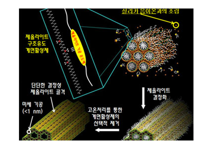
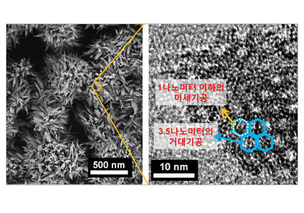
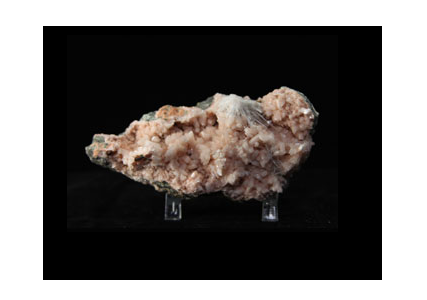

Report by Subjects
Report by Subjects
KAIST RESEARCH ACHIEVEMENTS
Synthesizing Beehive-shaped High-efficiency Zeolite Catalyst
Professor (Department of Chemistry) Ryong RYOO
Summary
High-Technology That Will Lead a 25 Hundred Million Dollar Catalyst Market The Center for Functional Nanomaterials has successfully synthesized a beehive-shaped, high-efficiency Zeolite catalyst. The catalyst, resembling a briquette with hexagonal mesopores of 3.5nm that are supported by a framework composed of ordered nanopores of less than 1nm, has shown greater activity than previously synthesized catalysts.
R&D Report
zeolite is a crystalline material that is made up of uniformly linked silica, which is the main component of sand and aluminum. The crystal contains numerous nanopores of less than 1nm in diameter that allow tiny molecules to pass through. Each pore is only about one thousandth of a single hair, and they not only speed up reactions at the nano scale, but also act as a filter by sieving out molecules. Therefore, molecules are selectively let in through one end of the zeolite crystal, and then react on the active site in the interior lining of zeolite. The products finally pass out through the other end.
owing to such properties, zeolite has attracted much attention as a petrochemical catalyst, needed in the production of separating media and gasoline. There has, however, been one critical problem in conventional zeolite. Since the nanopores are meticulously arranged three-dimensionally, some molecules have difficulty progressing through the length of the pores. These molecules clog up the pores, take up active sites, and make it impossible for new molecules to react on the site, causing rapid deterioration of zeolite's catalytic functions. The size of the pores becomes a limiting factor in some cases, and thus zeolite could not be used in reactions involving larger molecules. It has thus long been the desire of researchers working on zeolites to develop a novel material that could overcome these problems.

1. The synthesis of beehive-shaped zeolite begins with adding zeolite structure-directing surfactants and silica to an alkaline solution. The surfactants are composed of molecules that are found in soap, with hydrophilic heads and hydrophobic tails. As can be seen in the figure, this research newly designed the structure of surfactants, which were prepared via an organic synthesis route, and then employed a structure-directing agent in the synthesis of beehive-shaped zeolite. In the alkaline solution, the tails of the surfactant molecules (white) bond with each other and self-assemble to form giant molecules called micelles, which organize themselves into a beehive-shape. Simultaneously, the heads (red), which are positively charged, bond with silica molecules, which are negatively charged, to make up the beehive framework. 2. If we take this solution and heat it under pressure and high temperatures of 140(degree), the silica molecules making up the framework crystalize and are converted into zeolite. 3. The zeolite framework is able to withstand high temperatures of up to 600(degree), and hence surfactants are selectively removed at around 550(degree). 4. Once the surfactants are removed, we are left with a beehive-shaped zeolite made up of mesopores of 3.5nm that form a framework that contains nanopores of 1nm. coalescence of mesopores with smaller nanopores increase catalyst activity
 Pic 2. The beehive-shaped zeolite crystals as seen using a scanning electron microscope
 Pic 3. The interior of the crystals seen through a transmission electron microscope we can observe 3.5nm mesopores and 1nm nanopores. as seen using a scanning electron microscope
Implications and Future Prospects
KAIST's Center for Functional Nanomaterials, led by Professor Ryong Ryoo, carried out experiments in order to overcome zeolite's innate problem of low molecular diffusion. The problem with conventional zeolites arose from their highly ordered structure of 1nm nanopores. Professor Ryoo and his team suggested that a solution may be found by synthesizing a new material that contains both larger mesopores as well as tiny nanopores that are characteristic of zeolites. The team was able to create a new form of zeolite by making use of a special surfactants equipped with zeolite structure-directing agents in an organic reaction. Zeolite synthesized in this manner is made up of mesopores of 3.5nm that are arranged in a beehive-shape to form a framework, as well as nanopores of less than 1nm in diameter that are present within the framework supporting the mesopores.
Research Funding
ㆍNational Honour Scientist Program (Korea Ministry of Education, Science and Technology)
Patent
ㆍKorean Patent (No. 10-2010-0064200)
ㆍPCT Patent (No. PCT/KR2011/004128)
Publication
ㆍ"Directing Zeolite Structures into Hierarchically Nanoporous Architectures", Science 333 (2011): 328-332.